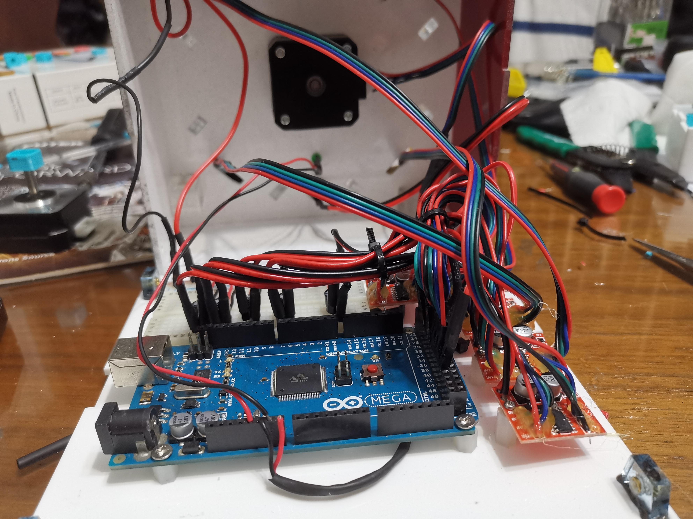
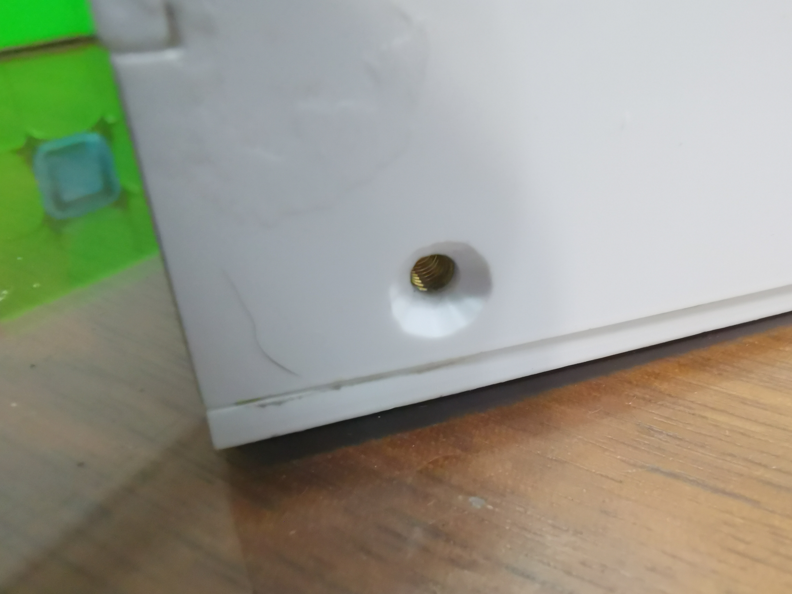
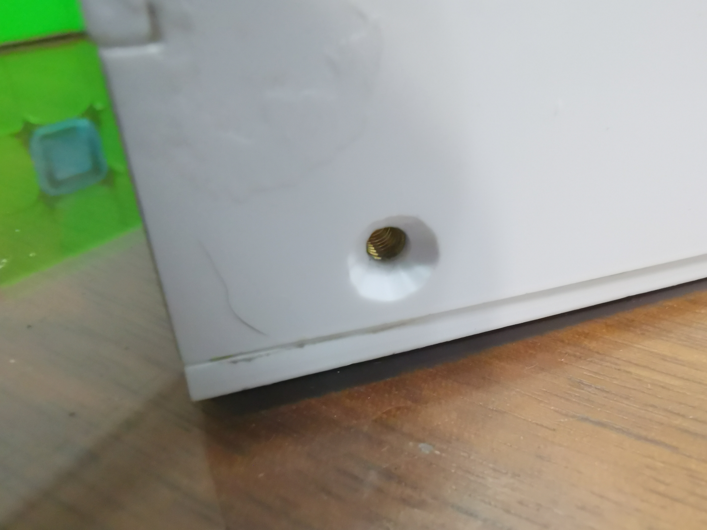
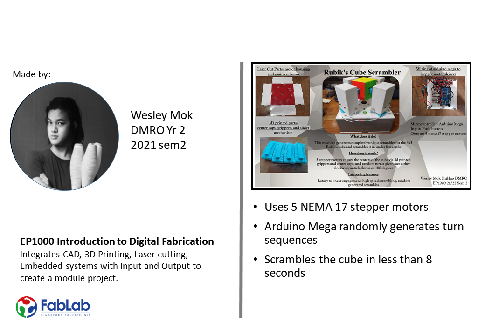

Final Project
After learning about all these prototyping skills, it's time to put them all together into one final project. In this webpage, I will go into all the details of my Final Project.
Rubik's Cube Scrambler
What is this?
For my Final Project, I will be designing and fabricating a machine that scrambles the most popular puzzle in the world. The Rubik's Cube.
What does it do?
The Rubik's Cube was invented by Erno Rubik in 1974 and quickly soared in popularity. It was not long before competitions were held where players known as Speedcubers would compete to solve the cube as quickly as possible. The aim of my machine is to scramble a Rubik's cube quickly so that Speedcubers can practice effeciently.
What are it's features?
My Rubik's Cube Scrambler will use five stepper motors to rotate five different faces of the cube. With this configuration, the machine can scramble the cube into any of it's 43 quintillion scrambled states, all of which will be randomly generated using an Arduino Mega.
What will I make and how?
| Process | Features |
|---|---|
| CAD Design, Graphics | I will design the enclosure to hold all the electronics including the Arduino Board and stepper motors. I will also design the arms to hold and rotate the cube. |
| Laser Cutting | I will laser cut all the panels of the enclosure where flat sheets of material will be used. |
| 3D Printing | I will 3D print a housing to hold the electronics inside the enclosure and also the arms that hold the cube. Any other complex component will be 3D printed if the part cannot be laser cut. |
| Micro-controller | Arduino MEGA Pro |
| Input Devices | Push button |
| Output Devices | Stepper Motors |
Bill of Materials
These are the components I used, and their approximate cost, in case you want to make something similar.
| Sn. | Qty | Item Description | Approx Cost |
|---|---|---|---|
| 1. | 5 | NEMA 17 Stepper motor | $8/pc |
| 2. | 1 | Arduino MEGA Pro | $30/pc |
| 3. | 1 | Push Button | $0.90/pc |
| 4. | 1 | ON/OFF switch | $0.90/pc |
| 5. | 5 | L298N Stepper Motor Driver | $4/pc |
| 6. | 4 | 5mm brass rod | $5/300mm |
| 7. | 20 | M3 bolts | $0.5>/pc |
| 8. | 4 | M3 bolts (countersunk) | $0.5>/pc |
| 9. | 4 | M3 brass inserts | $0.5>/pc |
| 10. | 1 | LED | $0.5>/pc |
| 11. | 5 | 100uF capacitor | $0.8/pc |
| 12. | 1 | 220Ohm resistor | $0.15/pc |
| 13. | 1 | DC barrel jack adapter (Female) |
Conceptualisation
Why did I choose to make a Rubik's Cube scrambler? For many people, myself included, solving puzzles is more than just a hobby, but a passion. These Speedcubers spend many hours scrambling and solving the cube, trying to get their solve times down.
Why a scrambler instead of a solver? Simple. As a speedsolver, solving the cube is pretty much childsplay. Therefore solving the cube is not an issue. The far more tedious task for practicing is the process of scrambling the cube to the scramble randomly generated by a computer. Therefore, having a machine to scramble the cube would save lots of time and effort.
Design
Every project starts with an idea. The next step is to create sketches and models to help visualise your idea. In order to get inspiration for my design, I did some research on some of the existing designs for similar projects.
Many of these designs used 6 different motors with a shaft attached to the centre pieces of each face to turn the cube. Click here to see such a project.
This design is pretty solid, it turns the cube pretty quickly. The only disadvantage being that the cube cannot be taken out easily.
The other common design involves using 2 servos to grip 2 sides of the cube, and 2 servos to rotate the face, or rotate the whole cube. Instructables tutorial.
While being easy to take out and using less components, the gripping mechanism is more complex and the turning is slower.
Then, I stumbled upon a robot called the "GAN Robot". This robot is manufactured by GAN, a Chinese speedcube manufacturer. This Robot is designed to work in tandem with their own "Smart Cube" and mobile app to scramble and solve the cube. Their design uses only 5 motors to turn 5 faces of the cube, as it is possible to scramble the cube into any state by turning only 5 faces.
This was the most ideal design as the turning speed was very fast and the cube could easily be taken out. Therefore I used this design as inspiration for my project.
CAD
I used Fusion360 to model my design, borrowing some elements from the GAN robot and modifying certain attributes to fit my components. The photo below shows my initial design.

This was just to get an idea of how the machine would look. It is far from perfect, so I would look for areas that need improvement and redesign those.
After a few iterations, I finished my 3D model. It looks more refined,the main improvement being to the rotary slider, as well as the motor housings. Here's a link to my 3D model.

The motor configuration is similar to the GAN robot, but the mechanism to engage the motors is different. My design uses rotary to linear motion to rotate the motors around a pivot and engage the centre pieces of the cube.
Because the motors need to engage the centre pieces, I had to design dedicated centre caps and some sort of gripper to grip the centre caps. The cube I am using is the "YiXun Little Magic", so you may need to modify the design if you plan on using a different cube. The motor on the bottom will need a slightly different height of gripper to ensure that the cube is in the centre of all the motors. I've included the 3D model for the gripper and cap here, and the bottom one is here.

I replicated the original cap design and cut a groove into it for the prong to interface with.

I created a prong that matches with the groove in the cap. I also extruded a profile that the shaft of the motor can fit into, and I also added a hole in the side for a 2mm screw to hold the prong in place.
Fabrication
After making our 3D model, we can start fabricating our design. When I designed this project, I intended to laser cut the majority of the parts as it is faster than 3D printing. Therefore, almost all of the parts will be laser cut, except for the parts that are not flat or have complex geometry such as the centre caps.
Laser Cutting
As mentioned earlier, most of the parts are flat panels designed to be cut out of 3mm acrylic sheets with the laser cutter. I cut all the parts out using the Fablab's Universal laser cutter with the settings as follows.
- Power: 40%
- Speed: 20%
- PPI: 60
3D Printing
As for 3D printing, I reserved this method of fabrication for the more organic parts in my design. These include the modified center caps of my cube, the prongs to grip the cube, and parts of my sliding mechanism.
Sliding Mechanism
I used a layer height of 0.12 with supports touching the base at 50mm/s
Center Cap
I used a layer height of 0.2 with no supports at 50mm/s
Prong
I used 0.28 layer height in CURA with no supports at 50mm/s
After Laser cutting and 3D printing, you should have the parts seen below.

Let's run through all the parts you need to start assembling.
Sheet Acrylic
You should have:

- Four 3mm side panels (2 with holes)
- One 3mm Top panel
- One 3mm bottom panel
- Four 5mm pieces (To secure the bottom to the body)
- Eight 5mm motor pivots
- Four 3mm motor housings (Sides, top, bottom, front)
3D Printed Parts
You should have:
- Five gripper prongs (including bottom)
- Five center caps
- Four sliders
Electronic Components

You should have:
- Five stepper motors (NEMA 17)
- One Arduino Mega 2560 OR MEGA Pro
- Five H-Bridge drivers (I used L298 mini)
- One push button (Not in picture)
- One ON/OFF switch (Not in picture)
- One Female DC adapter (Not in picture)
- 5 100uf capacitors (Not in picture)
Others
- Jumper wires
- Breadboard
- Four dia 5mm brass rods about 60mm long
- M3 threaded inserts
Tools
When putting together this project, there are a few tools that are neccesary for assembly, but also some tools that are just nice to have and make the final assembly look more finished.
Neccesary Tools
- Soldering Iron: For soldering components and inserting threaded inserts
- Hand drill/Drill press: For drilling holes for power input, LED, ON/OFF switch.
- Sandpaper
- Some form of glue (I used mainly super glue)
- Hairdryer or heat gun: for shrinking heat shrink
- Wire cutter
Assembly
Now we're ready to assemble. Let's ignore the electronics and coding for now and see how to assemble the body of the machine together.
I started with the motor housing, as they are the easiest and least risky to assemble. I used super glue to glue the sides, top and bottom together, leaving the front for last in case I needed to change out a motor.

Because I was doing most of the assembly at home, I happened to have a small vise that I used to help glue the small pieces together, so if you happen to have access to a vise, that might help with the accuracy of your assembly.

For the rest of the main housing, assembly is pretty simple, glue the side panels to the top, and glue the pivots into the top. The only thing I did differently was drill holes into the side panels for some ventillation, which I will go into more detail in the electronics section.

Electronics
Our main output devices are the NEMA17 stepper motors. So let's test those out first to make sure they work. A stepper motor is basically two coils placed perpendicular to each other with the motor coil in the center. When you energize the coils at the right time, you can make the output rotate in discreet steps. For my motors, 1 full rotation is 200 steps. So let's take a look at how to make them move.
You will need a breadboard, jumper wires, your motor, and a H-bridge of your choice to drive the motor.

Here's the circuit diagram I used. I took it from lastminuteengineers.com. I also borrowed some of the code from there.

If you've wired it up correctly, you should see you motor rotate clockwise, wait half a second, then rotate anticlockwise.
If it works, that means we can use the myStepper.step() function to control the other 4 motors as well. All we need to do is write some code that randomly selects which motor to turn.
Here's the code I wrote. I created an instance for each stepper motor, and then assigned each of the different rotations an integer. I also assigned an integer to each of the 6 cube faces. I then created an array with all the different number of steps required to rotate clockwise, anticlockwise, and a half turn. Then I created some functions to move the steppers, the main one being move(), which takes in a randomly selected face, and a randomly selected direction. Notice that I included the Up face, even though there's no motor there. I was planning to use a special sequence of moves to manipulated the Up face but decided to leave it alone in the interest of time and also because I couldnt get it to work. I will continue working on it after I take back my project. Finally, I set the speed of the motors to 120rpm. In the loop function, I created a variable for the push button "pb1" and set it to read the input at pin 46. Then when the input is low, randomly choose one of the 5 faces, and randomly choose one of the three directions. This is all happening in a for loop, which limits the number of repetitions to 25, which equals to 25 moves on the cube. I also added a while loop to ensure the same face does not get turned twice.
I then tested the code with only 2 motors, to make sure I got the logic correct. Also, to connect multiple motors to your board is simple, connect the 12V adapter to both motors, and plug your 4 motor inputs into available I/O pins on the Arduino Board.
After that, I took all the components home to start testing with 5 motors and then I could start soldering everything together. It was at this point that I realised that the H-Bridge started to heat up to an uncomfortable level whenever the motors would turn continuously or hold it's position as it was drawing lots of current. There are a couple of ways to fix this with hardware but I decided to just deactivate the inputs to the motors after each turn, thus the long line of "digitalWrite(LOW)" at the bottom of the code.
Testing Torque
Here's me testing the torque with 2 motors attached to the cube. The torque was sufficient luckily, so I did a test with 5 motors.
Now that that works, it's time to solder everything together once and for all.
I also happen to have some 4 pin male connectors which were very convenient as my motors each have 4 wires so plugging it into the Arduino MEGA was easy.

I also made it a point to mark out where all the components will go inside the base so I can mount them with plastic pcb stands and it will make everything much neater.
After soldering the components, I soldered an indicator LED and also a DC adapter so I could take in 9V dc to power the Arduino and also the motors, but when I tested the circuit, it wouldnt work. Only one motor would move and then stop abruptly. I concluded that something was drawing too much current, preventing the motors from running properly. To solve this, I connected 100uF capacitors in parallel with the DC inputs of the motors. The capacitors would help to drive the motors when the current is not enough. My circuitry ended up looking like this.

Let's put everything together and see how it works, along with some troubles that I had with the process and also some minor details that werent in the original design.
Troubleshooting
Caps
Let's start with the caps and grippers. When I initially designed the gripping mechanism, I designed the cap to be completely flat on top. This made the engaging mechanism very finnicky to use. I basically had to wiggle the cube into position and close the motors aroun it before rotating the wheel. As a result, I redesigned the caps to have chamfering on the inner edges to allow the cube to slide into position.

Prong
Next, I originally designed the grippers to have a gripping depth of 4mm. This works great for grabbing and turning the cube, but when engaging the cube, They are too long and obstruct the cube from going in and out.
As such, I reduced the depth to 2mm, which only had to inverse problem, they didn't grip the cube well. So I split the difference and made it 3mm and it worked well enough.
Spring Block
You might have noticed in a previous video that the design allows the motor to tilt all the way forward. This is not ideal, so I designed a rectangular block to fit underneath the housings. This will solve the tilting problem. I can also put a hole in the middle to fit a spring inside. This will ensure the motor never falls forward and even helps the motors disengage.


Note that this does not affect the performance of the scrambling so you can skip this is you plan on making something similar.
Motor Housing
The motor housing had a fatal flaw, which is that I have to glue the front panel down, which makes trouble shooting difficult as I have to destroy the housing to access or swap out the motor. To fix this, I drilled 2 holes in the front and back panels, and printed a sort of dowel with holes to allow screws to thread and secure the front to the rest of the housing. Here's a link to that 3D model.

Base
The same goes for the base of the machine. I designed it to be glued onto the rest of the machine, but realised that would prevent me from opening the machine and fixing any hardware problems or reprogramming the Arduino Board. Because of this, I redesigned the sides and the base, so that the base can be screwed in place. I even used threaded brass inserts to ensure the screws would go in nicely. I then countersunk the holes on the sides so the screws would sit flush with the side panels.
 

Colour Matching
A surprising issue I faced was actually colour matching the 3D printed center caps. Because I printed all my parts in turquoise, certain colours such as orange, yellow and red have a hard time showing up nicely. So I had to mix and match different colours to get the centers to look as close as possible to the manufactured ones. My advice if you plan on doing something similar is to either print all the caps in white PLA, or use PLA with a similar colour to the caps.
Conclusion
In conclusion, this project taught me a lot about optimisation. As with all my projects, I take pride in making the final product as refined as possible, and this project was no different. Although I admit it was a bit too much for EP1000, I am glad I worked through all the issues and I could learn to use the Laser Cutter to quickly fabricate my project. I would highly recommend anyone to recreate this project it is a great learning opportunity. Below is a video showing exactly how my machine would work, and that's it for my EP1000 website! Good Luck!
